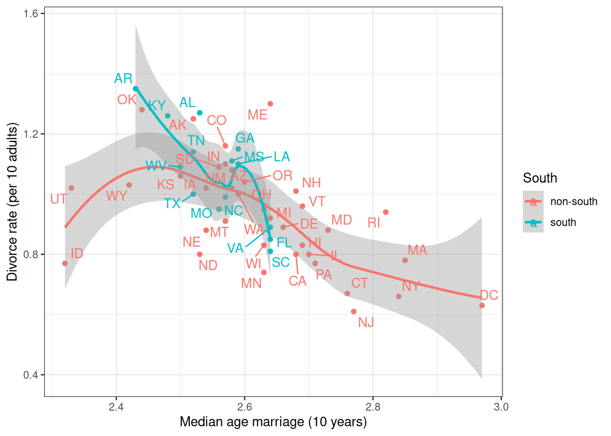
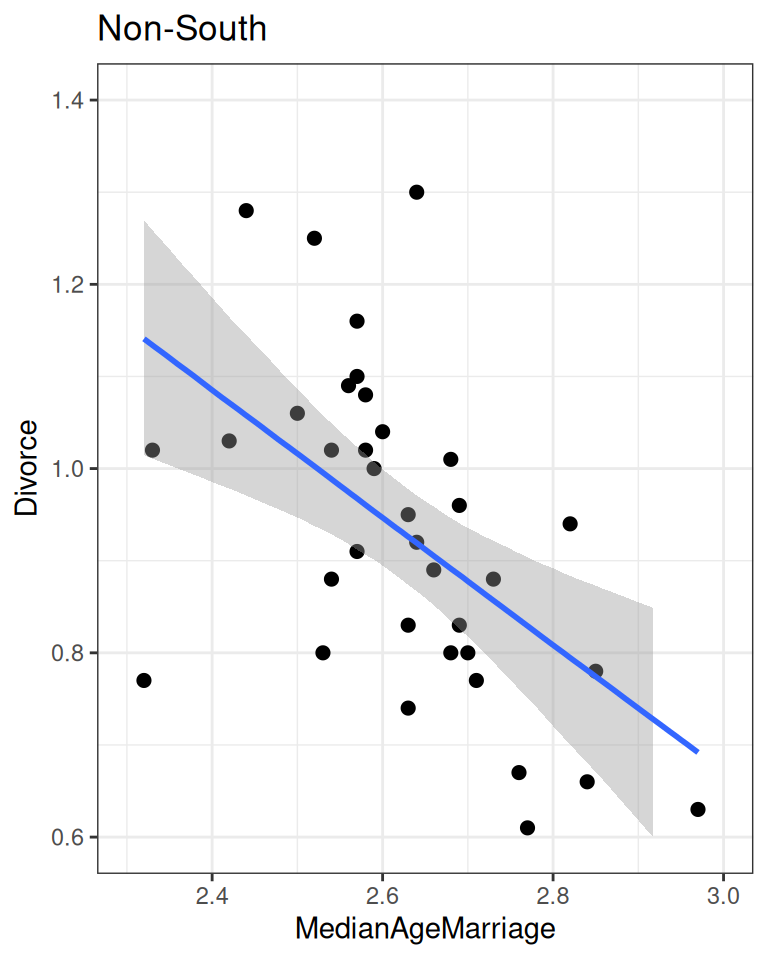
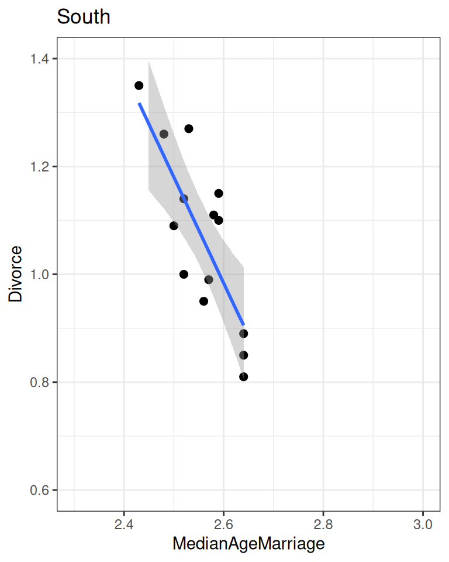
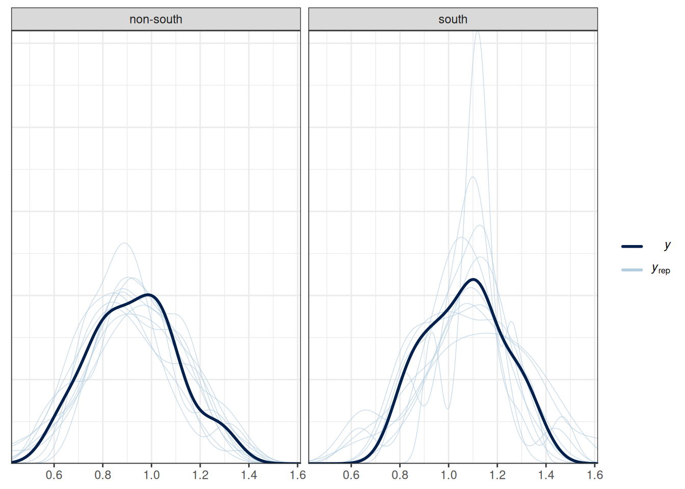
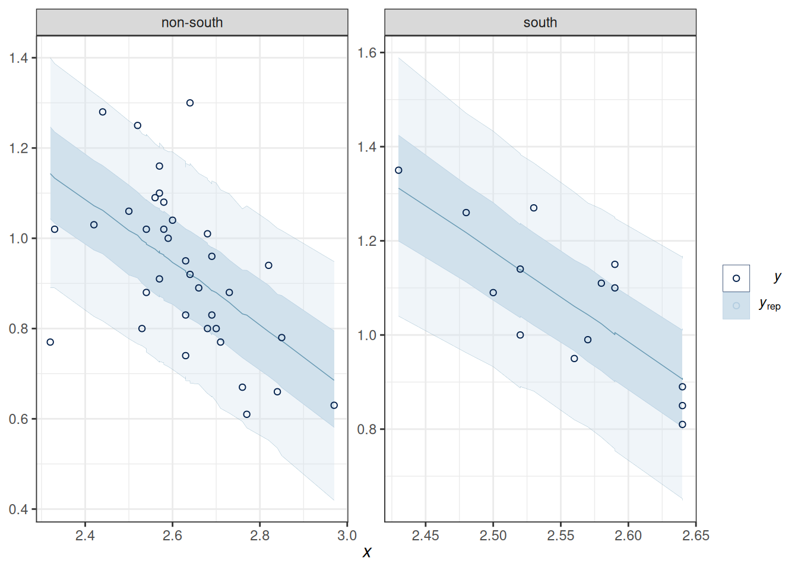
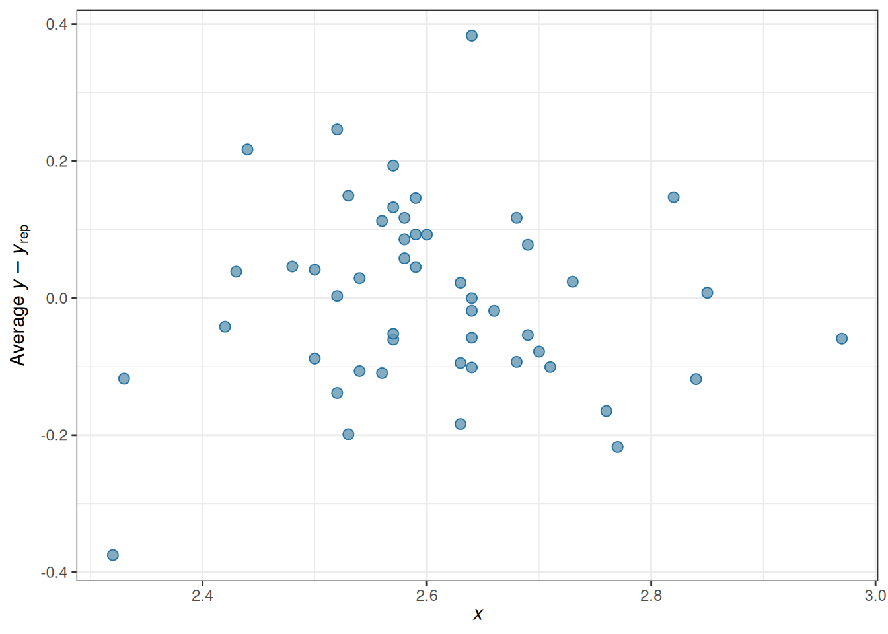
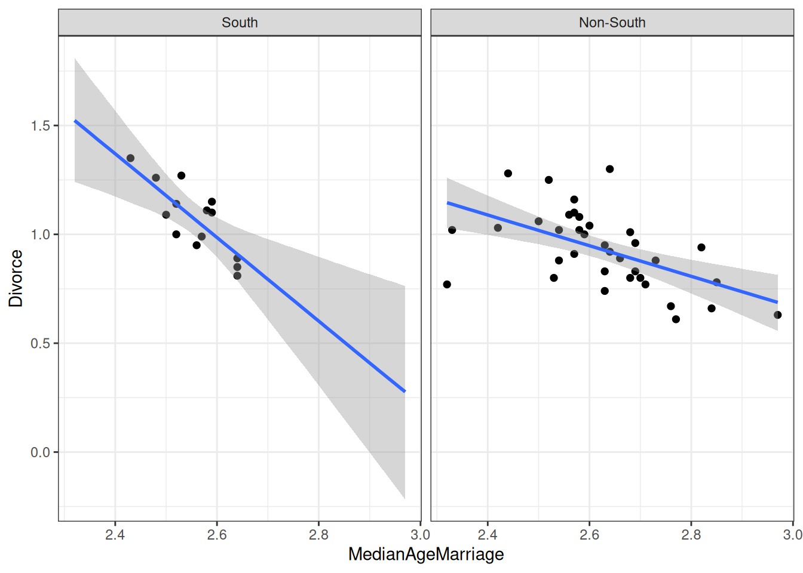

if (!file.exists("data/WaffleDivorce.csv")) {
download.file(
"https://raw.githubusercontent.com/rmcelreath/rethinking/master/data/WaffleDivorce.csv",
"data/WaffleDivorce.csv"
)
}
waffle_divorce <- read_delim( # read delimited files
"data/WaffleDivorce.csv",
delim = ";"
)
# Rescale Marriage and Divorce by dividing by 10
waffle_divorce$Marriage <- waffle_divorce$Marriage / 10
waffle_divorce$Divorce <- waffle_divorce$Divorce / 10
waffle_divorce$MedianAgeMarriage <- waffle_divorce$MedianAgeMarriage / 10
# Recode `South` to a factor variable
waffle_divorce$South <- factor(waffle_divorce$South,
levels = c(0, 1),
labels = c("non-south", "south")
)
# See data description at https://rdrr.io/github/rmcelreath/rethinking/man/WaffleDivorce.html9 Multiple Predictors
Here, we’ll use an example from McElreath (2020), which contains some marriage and demographic statistics for the individual states in the United States. See https://rdrr.io/github/rmcelreath/rethinking/man/WaffleDivorce.html for more details.
9.1 Stratified Analysis
Let’s consider whether the association between MedianAgeMarriage and Divorce differs between Southern and non-Southern states. Because (and only because) the groups are independent, we can fit a linear regression for each subset of states.
ggplot(waffle_divorce,
aes(x = MedianAgeMarriage, y = Divorce, col = South)) +
geom_point() +
geom_smooth() +
labs(x = "Median age marriage (10 years)",
y = "Divorce rate (per 10 adults)") +
ggrepel::geom_text_repel(aes(label = Loc))`geom_smooth()` using method = 'loess' and formula = 'y ~ x'Warning: ggrepel: 3 unlabeled data points (too many overlaps). Consider
increasing max.overlaps

9.2 Introducing the brms package
While Stan is very flexible, because the linear model and some related models are so widely used, some authors have created packages that would further simplify the fitting of such models. One of those packages is brms, which I believe stands for “Bayesian regression models with Stan.” It allows one to do MCMC sampling using Stan, but with syntax similar to that in R functions lm(), glm(), and lme4::lmer(). brms probably supports more models than any R packages that statisticians routinely used; there are models, like factor analysis, that are not directly supported. If you came across some fancy regression models, chances are you can do something similar in brms. You can find some resources for learning brms on this page: https://paul-buerkner.github.io/brms/.
Model formula
brms comes with some default prior options, but I recommend you always check what priors are used and think about whether they make sense for your data. You can use get_priors() to show the default priors used in brms.
To do MCMC sampling, we use the brm() function. The first argument is a formula in R. The variable before ~ is the outcome, whereas the ones after ~ are the predictors. For example,
vote ~ 1 + growthmeans the model
\[ E(\text{vote}_i) = \beta_0 (1) + \beta_1 (\text{growth}_i). \]
Usually, I write vote ~ 1 + growth as vote ~ growth, as the 1 + part is automatically added.
Setting Priors
brms comes with some default prior options, but over the years, the package maintainers have changed those priors, so the default today may be different from the one next year. Therefore, you should always check what priors are used and think about whether they make sense for your data. You can use get_priors() to show the default priors used in brms. For example,
get_prior(Divorce ~ MedianAgeMarriage,
data = waffle_divorce)m_nonsouth <-
brm(Divorce ~ MedianAgeMarriage,
# Filter `waffle_divorce` to only include non-southern states
data = filter(waffle_divorce, South == "non-south"),
# Use N(0, 2) and N(0, 10) as priors for beta1 and beta0,
# and use t_4(0, 3) as a prior for sigma
prior = prior(normal(0, 2), class = "b") +
prior(normal(0, 10), class = "Intercept") +
prior(student_t(4, 0, 3), class = "sigma"),
seed = 941,
iter = 4000,
file = "m_nonsouth"
)m_south <-
brm(Divorce ~ MedianAgeMarriage,
data = filter(waffle_divorce, South == "south"),
prior = prior(normal(0, 2), class = "b") +
prior(normal(0, 10), class = "Intercept") +
prior(student_t(4, 0, 3), class = "sigma"),
seed = 2157, # use a different seed
iter = 4000,
file = "m_south"
)We can make a table like Table 9.1 for brms results using the modelsummary::msummary() function.
msummary(list(South = m_south, `Non-South` = m_nonsouth),
estimate = "{estimate} [{conf.low}, {conf.high}]",
statistic = NULL, fmt = 2,
gof_omit = "^(?!Num)" # only include number of observations
)Warning:
`modelsummary` uses the `performance` package to extract goodness-of-fit
statistics from models of this class. You can specify the statistics you wish
to compute by supplying a `metrics` argument to `modelsummary`, which will then
push it forward to `performance`. Acceptable values are: "all", "common",
"none", or a character vector of metrics names. For example: `modelsummary(mod,
metrics = c("RMSE", "R2")` Note that some metrics are computationally
expensive. See `?performance::performance` for details.
This warning appears once per session.| South | Non-South | |
|---|---|---|
| b_Intercept | 6.09 [3.60, 8.45] | 2.74 [1.75, 3.74] |
| b_MedianAgeMarriage | −1.96 [−2.89, −0.98] | −0.69 [−1.07, −0.31] |
| sigma | 0.11 [0.07, 0.17] | 0.15 [0.12, 0.20] |
| Num.Obs. | 14 | 36 |
We can now ask two questions:
- Is the intercept different across southern and non-southern states?
- Is the slope different across southern and non-southern states?
The correct way to answer the above questions is to obtain the posterior distribution of the difference in the coefficients. Repeat: obtain the posterior distribution of the difference. The incorrect way is to compare whether the CIs overlap.
Here are the posteriors of the differences (\(\beta_0^\text{south} - \beta_0^\text{nonsouth}\) and \(\beta_1^\text{south} - \beta_1^\text{nonsouth}\)):
# Extract draws
draws_south <- as_draws_matrix(m_south,
variable = c("b_Intercept", "b_MedianAgeMarriage")
)
draws_nonsouth <- as_draws_matrix(m_nonsouth,
variable = c("b_Intercept", "b_MedianAgeMarriage")
)
# Difference in coefficients
draws_diff <- draws_south - draws_nonsouth
# Rename the columns
colnames(draws_diff) <- paste0("d", colnames(draws_diff))
# Summarize
summarize_draws(draws_diff) |>
knitr::kable(digits = 2)| variable | mean | median | sd | mad | q5 | q95 | rhat | ess_bulk | ess_tail |
|---|---|---|---|---|---|---|---|---|---|
| db_Intercept | 3.32 | 3.34 | 1.34 | 1.29 | 1.14 | 5.45 | 1 | 6115.12 | 5017.01 |
| db_MedianAgeMarriage | -1.26 | -1.27 | 0.52 | 0.50 | -2.09 | -0.41 | 1 | 6112.20 | 5034.56 |
As you can see, the southern states have a higher intercept and a lower slope.
plot(
conditional_effects(m_nonsouth),
points = TRUE, plot = FALSE
)[[1]] + ggtitle("Non-South") + lims(x = c(2.3, 3), y = c(0.6, 1.4))
plot(
conditional_effects(m_south),
points = TRUE, plot = FALSE
)[[1]] + ggtitle("South") + lims(x = c(2.3, 3), y = c(0.6, 1.4))


9.3 Additive Model
An additive model assumes that the difference between predicted \(Y\) for two levels of \(X_1\) is the same regardless of the level of \(X_2\). In our example, we assume that the predicted difference in divorce rate associated with the median age of marriage does not depend on whether the state is southern or not. Equivalently, we assume that the predicted difference in Southern and non-Southern states does not depend on the median age of marriage.
\[ \begin{aligned} D_i & \sim N(\mu_i, \sigma) \\ \mu_i & = \beta_0 + \beta_1 S_i + \beta_2 A_i \\ \beta_0 & \sim N(0, 10) \\ \beta_1 & \sim N(0, 10) \\ \beta_2 & \sim N(0, 1) \\ \sigma & \sim t^+_4(0, 3) \end{aligned} \]
- \(\beta_1\): Expected difference in divorce rate between southern and non-southern states.
- \(\beta_2\): Expected difference in divorce rate for one unit difference in median age of marriage.
In the model, the variable S, southern state, is a dummy variable with 0 = non-southern and 1 = southern. Therefore,
Dummy Coding
- For non-southern states, \(\mu = (\beta_0) + (\beta_2) A\);
- For southern states, \(\mu = (\beta_0 + \beta_1) + \beta_2 A\)
m_additive <- brm(
Divorce ~ South + MedianAgeMarriage,
data = waffle_divorce,
prior = prior(normal(0, 2), class = "b") +
prior(normal(0, 10), class = "b", coef = "Southsouth") +
prior(normal(0, 10), class = "Intercept") +
prior(student_t(4, 0, 3), class = "sigma"),
seed = 941,
iter = 4000,
file = "m_additive"
)m_additive Family: gaussian
Links: mu = identity; sigma = identity
Formula: Divorce ~ South + MedianAgeMarriage
Data: waffle_divorce (Number of observations: 50)
Draws: 4 chains, each with iter = 4000; warmup = 2000; thin = 1;
total post-warmup draws = 8000
Population-Level Effects:
Estimate Est.Error l-95% CI u-95% CI Rhat Bulk_ESS Tail_ESS
Intercept 3.00 0.46 2.10 3.89 1.00 7435 5360
Southsouth 0.08 0.05 -0.01 0.18 1.00 7847 5519
MedianAgeMarriage -0.79 0.18 -1.13 -0.45 1.00 7406 5423
Family Specific Parameters:
Estimate Est.Error l-95% CI u-95% CI Rhat Bulk_ESS Tail_ESS
sigma 0.15 0.02 0.12 0.18 1.00 7217 5426
Draws were sampled using sample(hmc). For each parameter, Bulk_ESS
and Tail_ESS are effective sample size measures, and Rhat is the potential
scale reduction factor on split chains (at convergence, Rhat = 1).9.4 Interaction Model: Different Slopes Across Two Groups
An alternative is to include an interaction term
\[ \begin{aligned} D_i & \sim N(\mu_i, \sigma) \\ \mu_i & = \beta_0 + \beta_1 S_i + \beta_2 A_i + \beta_3 S_i \times A_i \\ \beta_0 & \sim N(0, 10) \\ \beta_1 & \sim N(0, 10) \\ \beta_2 & \sim N(0, 1) \\ \beta_3 & \sim N(0, 2) \\ \sigma & \sim t^+_4(0, 3) \end{aligned} \]
- \(\beta_1\): Difference in intercept between southern and non-southern states.
- \(\beta_3\): Difference in the coefficient for A → D between southern and non-southern states
Dummy Coding in Interaction Model
- For non-southern states, \(\mu = (\beta_0) + (\beta_2) A\);
- For southern states, \(\mu = (\beta_0 + \beta_1) + (\beta_2 + \beta_3) A\)
m_inter <- brm(
Divorce ~ South * MedianAgeMarriage,
data = waffle_divorce,
prior = prior(normal(0, 2), class = "b") +
prior(normal(0, 10), class = "b", coef = "Southsouth") +
prior(normal(0, 10), class = "Intercept") +
prior(student_t(4, 0, 3), class = "sigma"),
seed = 941,
iter = 4000,
file = "m_inter"
)The formula Divorce ~ South * MedianAgeMarriage is the same as
Divorce ~ South + MedianAgeMarriage + South:MedianAgeMarriagewhere : is the symbol in R for a product term.
# Print summary of the model
m_inter Family: gaussian
Links: mu = identity; sigma = identity
Formula: Divorce ~ South * MedianAgeMarriage
Data: waffle_divorce (Number of observations: 50)
Draws: 4 chains, each with iter = 4000; warmup = 2000; thin = 1;
total post-warmup draws = 8000
Population-Level Effects:
Estimate Est.Error l-95% CI u-95% CI Rhat Bulk_ESS
Intercept 2.78 0.46 1.87 3.68 1.00 4716
Southsouth 3.20 1.60 0.19 6.30 1.00 2863
MedianAgeMarriage -0.70 0.18 -1.05 -0.35 1.00 4714
Southsouth:MedianAgeMarriage -1.22 0.62 -2.42 -0.03 1.00 2876
Tail_ESS
Intercept 4042
Southsouth 3608
MedianAgeMarriage 4085
Southsouth:MedianAgeMarriage 3584
Family Specific Parameters:
Estimate Est.Error l-95% CI u-95% CI Rhat Bulk_ESS Tail_ESS
sigma 0.14 0.02 0.12 0.18 1.00 4244 4998
Draws were sampled using sample(hmc). For each parameter, Bulk_ESS
and Tail_ESS are effective sample size measures, and Rhat is the potential
scale reduction factor on split chains (at convergence, Rhat = 1).9.4.1 Posterior predictive checks
# Check density (normality)
pp_check(m_inter, type = "dens_overlay_grouped", group = "South")Using 10 posterior draws for ppc type 'dens_overlay_grouped' by default.# Check prediction (a few outliers)
pp_check(m_inter,
type = "ribbon_grouped", x = "MedianAgeMarriage",
group = "South",
y_draw = "points"
)Using all posterior draws for ppc type 'ribbon_grouped' by default.


# Check errors (no clear pattern)
pp_check(m_inter,
type = "error_scatter_avg_vs_x", x = "MedianAgeMarriage"
)Using all posterior draws for ppc type 'error_scatter_avg_vs_x' by default.

9.4.2 Conditional effects/simple slopes
Slope of MedianAgeMarriage when South = 0: \(\beta_1\)
Slope of MedianAgeMarriage when South = 1: \(\beta_1 + \beta_3\)
as_draws(m_inter) |>
mutate_variables(
b_nonsouth = b_MedianAgeMarriage,
b_south = b_MedianAgeMarriage + `b_Southsouth:MedianAgeMarriage`
) |>
posterior::subset_draws(
variable = c("b_nonsouth", "b_south")
) |>
summarize_draws() |>
knitr::kable(digits = 2)| variable | mean | median | sd | mad | q5 | q95 | rhat | ess_bulk | ess_tail |
|---|---|---|---|---|---|---|---|---|---|
| b_nonsouth | -0.70 | -0.71 | 0.18 | 0.18 | -1.00 | -0.41 | 1 | 4713.61 | 4085.16 |
| b_south | -1.92 | -1.91 | 0.60 | 0.60 | -2.91 | -0.93 | 1 | 3168.15 | 3659.43 |
plot(
conditional_effects(m_inter,
effects = "MedianAgeMarriage",
conditions = data.frame(South = c("south", "non-south"),
cond__ = c("South", "Non-South"))
),
points = TRUE
)

9.5 Interaction of Continuous Predictors
plotly::plot_ly(waffle_divorce,
x = ~Marriage,
y = ~MedianAgeMarriage,
z = ~Divorce)No trace type specified:
Based on info supplied, a 'scatter3d' trace seems appropriate.
Read more about this trace type -> https://plotly.com/r/reference/#scatter3dNo scatter3d mode specifed:
Setting the mode to markers
Read more about this attribute -> https://plotly.com/r/reference/#scatter-mode\[ \begin{aligned} D_i & \sim N(\mu_i, \sigma) \\ \mu_i & = \beta_0 + \beta_1 M_i + \beta_2 A_i + \beta_3 M_i \times A_i \\ \end{aligned} \]
# Use default priors (just for convenience here)
m_inter2 <- brm(Divorce ~ Marriage * MedianAgeMarriage,
data = waffle_divorce,
seed = 941,
iter = 4000,
file = "m_inter2"
)9.6 Centering
In the previous model, \(\beta_1\) is the slope of M → D when A is 0 (i.e., median marriage age = 0), and \(\beta_2\) is the slope of A → D when M is 0 (i.e., marriage rate is 0). These two are not very meaningful. Therefore, it is common to make the zero values more meaningful by doing centering.
Here, I use M - 2 as the predictor, so the zero point means a marriage rate of 2 per 10 adults; I use A - 2.5 as the other predictor, so the zero point means a median marriage rate of 25 years old.
\[ \mu_i = \beta_0 + \beta_1 (M_i - 2) + \beta_2 (A_i - 2.5) + \beta_3 (M_i - 2) \times (A_i - 2.5) \]
msummary(list(`No centering` = m_inter2, `centered` = m_inter2c),
estimate = "{estimate} [{conf.low}, {conf.high}]",
statistic = NULL, fmt = 2)| No centering | centered | |
|---|---|---|
| b_Intercept | 7.38 [3.02, 11.58] | 1.09 [1.02, 1.16] |
| b_Marriage | −1.93 [−4.00, 0.16] | |
| b_MedianAgeMarriage | −2.45 [−4.07, −0.78] | |
| b_Marriage × MedianAgeMarriage | 0.74 [−0.07, 1.56] | |
| sigma | 0.15 [0.12, 0.18] | 0.15 [0.12, 0.18] |
| b_IMarriageM2 | −0.08 [−0.24, 0.09] | |
| b_IMedianAgeMarriageM2.5 | −0.94 [−1.44, −0.44] | |
| b_IMarriageM2 × IMedianAgeMarriageM2.5 | 0.75 [−0.08, 1.59] | |
| Num.Obs. | 50 | 50 |
| R2 | 0.414 | 0.413 |
| R2 Adj. | 0.282 | 0.268 |
| ELPD | 21.5 | 21.2 |
| ELPD s.e. | 6.1 | 6.2 |
| LOOIC | −42.9 | −42.5 |
| LOOIC s.e. | 12.2 | 12.5 |
| WAIC | −43.5 | −43.1 |
| RMSE | 0.14 | 0.14 |
As shown in the table above, while the two models are equivalent in fit and give the same posterior distribution for \(\beta_3\), they differ in \(\beta_0\), \(\beta_1\), and \(\beta_2\).